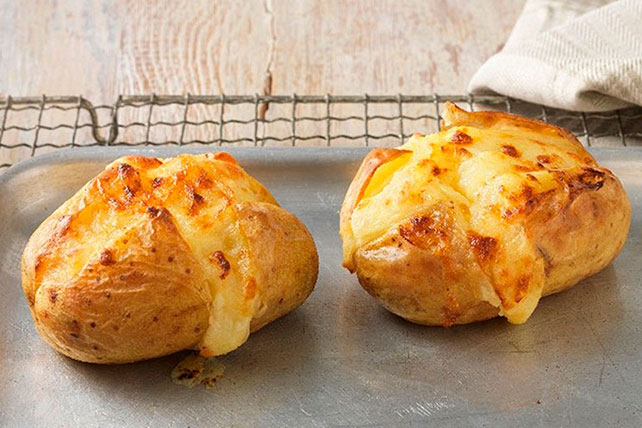

Baked Potato

Ingredients
- 2 tsp vegetable oil
- 8 large baking potatoes
- 300ml pot soured cream
Instructions
- Heat the oven to 220C/200C fan.
-
Rub a little oil over each potato and put on the top shelf of the oven.
-
Bake for 20 mins, then turn down the oven to 190C/170C fan and bake for
45 mins-1 hr more until the skin is crisp and the inside soft.
-
Make a cross in the centre of each potato, dollop over the soured cream
and serve.
Back to Main Page